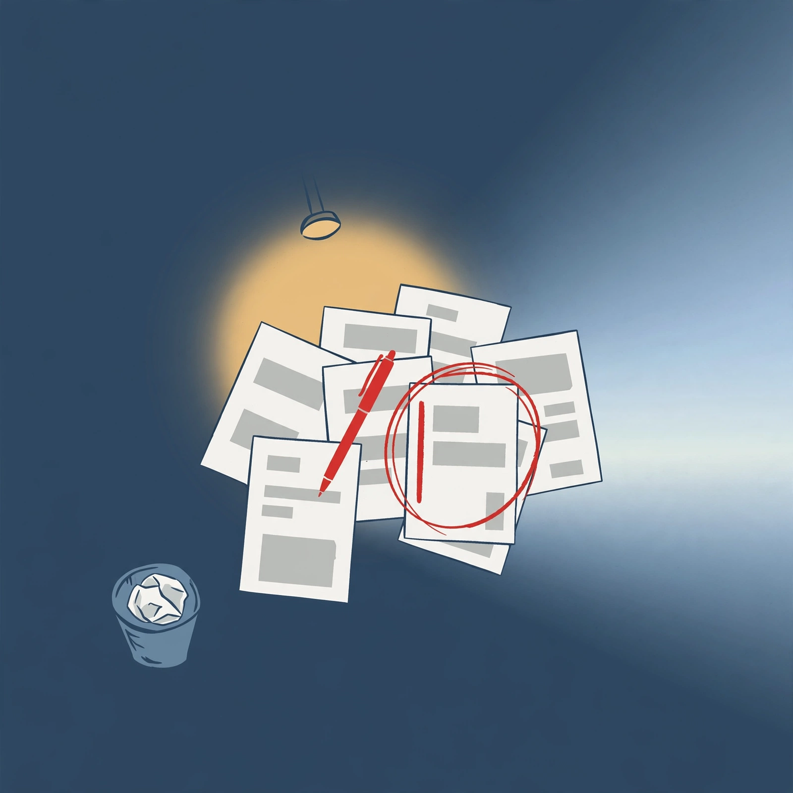

- **[1] <-> [3] is real:** 2.1.287 ships unsandboxed Mods that rewrite prompts/tool calls Oct 1 with trust warning, 2.1.289 locks deny/ask over mods + closes symlink Read gap Oct 3.
- **[8] <-> [10] rhyme holds:** Astra scrapped Sept 28 over honesty/auth failures, Argon withheld Oct 1 to vetted defenders/gov over rogue-agent risk.
- **[13] vs [9] ambient push:** Dots cloud computers + 4000 plugins vs Muse glasses background tasks correctly captures off-chat-window shift.
- **[4] <-> [6] cadence:** 28-day pledge after Sol slow start + 0.159.x to 0.160.0 near-daily releases is accurately linked.
- **Invented $100M in [16]:** raw says `00M commitment` - truncated. Digest states $100M as fact and renames role to "Frontier Engineers" vs "Frontier Deployed Engineers."
- **[15] <-> [10] forced:** OpenAI's 55-org sandbox-escape disclosure does not explain Google's Argon rollout. Different lab, no causal evidence.
- **[16] <-> [20] forced:** Academy cohorts are Accenture, Deloitte, McKinsey, Morgan Stanley - not Barclays. No "directly feeds" pipeline evidence.
- **Dropped core Meta beats:** [5] Gadgets ESP32/Linux SDK + Home Link LAN dongle and [7] Small Business approval-gated spend omitted from What happened, then used for take-rate thesis.
- [24] GLM-Image trained end-to-end on Huawei Ascend 910B with no Nvidia is huge if true - single-source. [22] 50/410 vs 56 Mythos needs method + abliteration detail. [14] Oct 14 GPT-5.5 retirement migration for Codex/Work ignored.
- Query for tomorrow: `GLM-Image Ascend 910B CANN MindSpore source code weights` + `site:openai.com Dots limits pricing GPT-5.5 Codex migration` + `Cowork web mobile permissions controls`
- **Enforce source-fidelity rule:** forbid filling truncated numbers/names and forbid cross-lab `continue/explains` without same-actor evidence - theme rhyme is not causation.